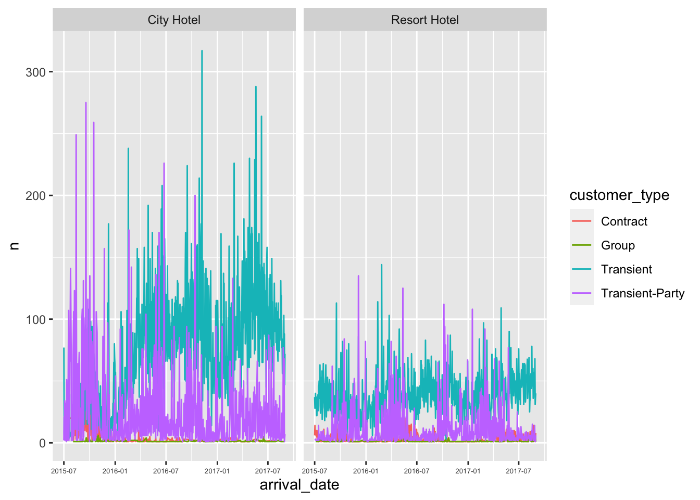
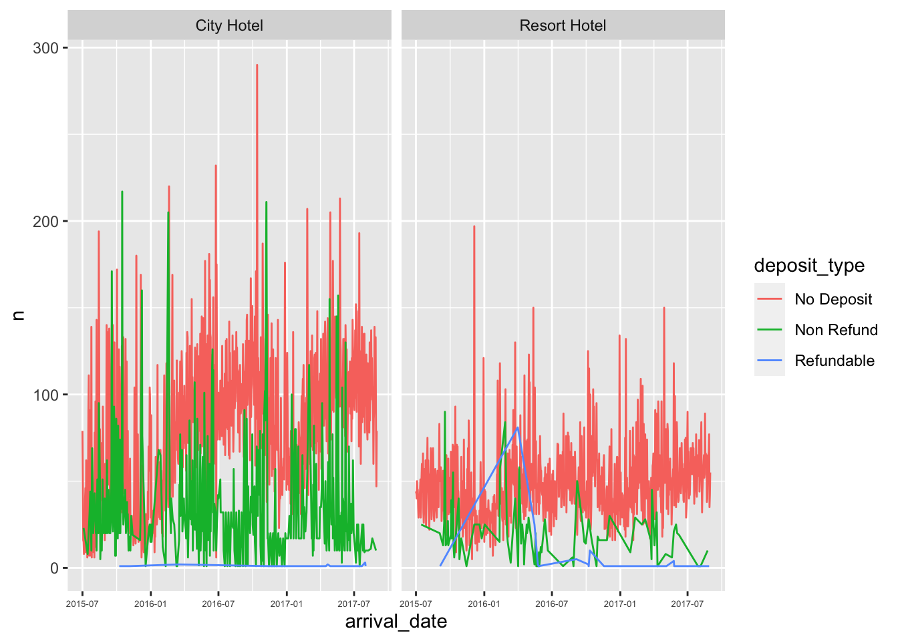

library(tidyverse)
library(ggplot2)
knitr::opts_chunk$set(echo = TRUE, warning=FALSE, message=FALSE)Challenge 7
challenge_7
hotel_bookings
maanusri balasubramanian
Visualizing Multiple Dimensions
Challenge Overview
Today’s challenge is to:
- read in a data set, and describe the data set using both words and any supporting information (e.g., tables, etc)
- tidy data (as needed, including sanity checks)
- mutate variables as needed (including sanity checks)
- Recreate at least two graphs from previous exercises, but introduce at least one additional dimension that you omitted before using ggplot functionality (color, shape, line, facet, etc) The goal is not to create unneeded chart ink (Tufte), but to concisely capture variation in additional dimensions that were collapsed in your earlier 2 or 3 dimensional graphs.
- Explain why you choose the specific graph type
- If you haven’t tried in previous weeks, work this week to make your graphs “publication” ready with titles, captions, and pretty axis labels and other viewer-friendly features
R Graph Gallery is a good starting point for thinking about what information is conveyed in standard graph types, and includes example R code. And anyone not familiar with Edward Tufte should check out his fantastic books and courses on data visualizaton.
(be sure to only include the category tags for the data you use!)
Read in data
Read in one (or more) of the following datasets, using the correct R package and command.
- eggs ⭐
- abc_poll ⭐⭐
- australian_marriage ⭐⭐
- hotel_bookings ⭐⭐⭐
- air_bnb ⭐⭐⭐
- us_hh ⭐⭐⭐⭐
- faostat ⭐⭐⭐⭐⭐
# reading dataset from CSV
bookings <- read.csv("_data/hotel_bookings.csv")
# peaking into the dataset
head(bookings) hotel is_canceled lead_time arrival_date_year arrival_date_month
1 Resort Hotel 0 342 2015 July
2 Resort Hotel 0 737 2015 July
3 Resort Hotel 0 7 2015 July
4 Resort Hotel 0 13 2015 July
5 Resort Hotel 0 14 2015 July
6 Resort Hotel 0 14 2015 July
arrival_date_week_number arrival_date_day_of_month stays_in_weekend_nights
1 27 1 0
2 27 1 0
3 27 1 0
4 27 1 0
5 27 1 0
6 27 1 0
stays_in_week_nights adults children babies meal country market_segment
1 0 2 0 0 BB PRT Direct
2 0 2 0 0 BB PRT Direct
3 1 1 0 0 BB GBR Direct
4 1 1 0 0 BB GBR Corporate
5 2 2 0 0 BB GBR Online TA
6 2 2 0 0 BB GBR Online TA
distribution_channel is_repeated_guest previous_cancellations
1 Direct 0 0
2 Direct 0 0
3 Direct 0 0
4 Corporate 0 0
5 TA/TO 0 0
6 TA/TO 0 0
previous_bookings_not_canceled reserved_room_type assigned_room_type
1 0 C C
2 0 C C
3 0 A C
4 0 A A
5 0 A A
6 0 A A
booking_changes deposit_type agent company days_in_waiting_list customer_type
1 3 No Deposit NULL NULL 0 Transient
2 4 No Deposit NULL NULL 0 Transient
3 0 No Deposit NULL NULL 0 Transient
4 0 No Deposit 304 NULL 0 Transient
5 0 No Deposit 240 NULL 0 Transient
6 0 No Deposit 240 NULL 0 Transient
adr required_car_parking_spaces total_of_special_requests reservation_status
1 0 0 0 Check-Out
2 0 0 0 Check-Out
3 75 0 0 Check-Out
4 75 0 0 Check-Out
5 98 0 1 Check-Out
6 98 0 1 Check-Out
reservation_status_date
1 2015-07-01
2 2015-07-01
3 2015-07-02
4 2015-07-02
5 2015-07-03
6 2015-07-03# number of rows
nrow(bookings)[1] 119390# number of columns
ncol(bookings)[1] 32# print column names
colnames(bookings) [1] "hotel" "is_canceled"
[3] "lead_time" "arrival_date_year"
[5] "arrival_date_month" "arrival_date_week_number"
[7] "arrival_date_day_of_month" "stays_in_weekend_nights"
[9] "stays_in_week_nights" "adults"
[11] "children" "babies"
[13] "meal" "country"
[15] "market_segment" "distribution_channel"
[17] "is_repeated_guest" "previous_cancellations"
[19] "previous_bookings_not_canceled" "reserved_room_type"
[21] "assigned_room_type" "booking_changes"
[23] "deposit_type" "agent"
[25] "company" "days_in_waiting_list"
[27] "customer_type" "adr"
[29] "required_car_parking_spaces" "total_of_special_requests"
[31] "reservation_status" "reservation_status_date" Briefly describe the data
The dataset contains information about hotel bookings made in Resort Hotel and City Hotel during the years 2015, 2016 and 2017. The dataset contains 119390 rows and 32 columns. Each entry in the dataset contains information about a particular booking like guest information, date of arrival, room information, payment information, show/no-show information, etc.
Tidy Data (as needed)
Is your data already tidy, or is there work to be done? Be sure to anticipate your end result to provide a sanity check, and document your work here.
The data is not tidy and work needs to be done: 1. The date information is split in multiple columns, combining these would make is easier for analysis. Creating a new column “arrival_date” by getting the date from “arrival_date_day_of_month”, “arrival_date_month”,“arrival_date_year” columns and dropping these 3 columns. 2. previous_bookings_not_canceled - this information is redundant and can be calculated from the columns “stays_in_weekend_nights” and “stays_in_week_nights”. So we can drop this column. 3. is_repeated_guest - again, this is redundant information. If atleast one of “stays_in_weekend_nights” and “stays_in_week_nights” is non-zero, then is_repeated_guest would be 1, else 0. So we can remove this column too. 4. Introducing column “children_count” - gives total of children plus babies. Removing columns “children” and “babies”.
We’ll be dropping 3 + 1 + 1 + 2 columns and adding 2 column. So we’ll have 27 columns after tidying.
# combining arrival date information into 1 column
tidy_bookings <- bookings %>%
mutate(arrival_date = (str_c(arrival_date_day_of_month, arrival_date_month, arrival_date_year, sep = "/")), arrival_date = dmy(arrival_date), .after = lead_time)
# removing all the above mentioned redundant data
tidy_bookings <- tidy_bookings[,-c(5, 6, 8, 14, 16)]
# combining children and babies information into 1 column - child
tidy_bookings <- tidy_bookings %>%
mutate(childs = children + babies, .after = adults) %>%
dplyr::select(-c("children","babies"))
head(tidy_bookings) hotel is_canceled lead_time arrival_date arrival_date_week_number
1 Resort Hotel 0 342 2015-07-01 27
2 Resort Hotel 0 737 2015-07-01 27
3 Resort Hotel 0 7 2015-07-01 27
4 Resort Hotel 0 13 2015-07-01 27
5 Resort Hotel 0 14 2015-07-01 27
6 Resort Hotel 0 14 2015-07-01 27
stays_in_weekend_nights stays_in_week_nights adults childs country
1 0 0 2 0 PRT
2 0 0 2 0 PRT
3 0 1 1 0 GBR
4 0 1 1 0 GBR
5 0 2 2 0 GBR
6 0 2 2 0 GBR
distribution_channel is_repeated_guest previous_cancellations
1 Direct 0 0
2 Direct 0 0
3 Direct 0 0
4 Corporate 0 0
5 TA/TO 0 0
6 TA/TO 0 0
previous_bookings_not_canceled reserved_room_type assigned_room_type
1 0 C C
2 0 C C
3 0 A C
4 0 A A
5 0 A A
6 0 A A
booking_changes deposit_type agent company days_in_waiting_list customer_type
1 3 No Deposit NULL NULL 0 Transient
2 4 No Deposit NULL NULL 0 Transient
3 0 No Deposit NULL NULL 0 Transient
4 0 No Deposit 304 NULL 0 Transient
5 0 No Deposit 240 NULL 0 Transient
6 0 No Deposit 240 NULL 0 Transient
adr required_car_parking_spaces total_of_special_requests reservation_status
1 0 0 0 Check-Out
2 0 0 0 Check-Out
3 75 0 0 Check-Out
4 75 0 0 Check-Out
5 98 0 1 Check-Out
6 98 0 1 Check-Out
reservation_status_date
1 2015-07-01
2 2015-07-01
3 2015-07-02
4 2015-07-02
5 2015-07-03
6 2015-07-03Are there any variables that require mutation to be usable in your analysis stream? For example, do you need to calculate new values in order to graph them? Can string values be represented numerically? Do you need to turn any variables into factors and reorder for ease of graphics and visualization?
Document your work here.
# cumulative info based on customer type
customer_types <- tidy_bookings %>%
group_by(hotel, arrival_date, customer_type) %>%
count(arrival_date, hotel, customer_type, .drop = F)
customer_types# A tibble: 3,987 × 4
# Groups: hotel, arrival_date, customer_type [3,987]
hotel arrival_date customer_type n
<chr> <date> <chr> <int>
1 City Hotel 2015-07-01 Transient 77
2 City Hotel 2015-07-01 Transient-Party 2
3 City Hotel 2015-07-02 Contract 20
4 City Hotel 2015-07-02 Transient 8
5 City Hotel 2015-07-02 Transient-Party 21
6 City Hotel 2015-07-03 Transient 3
7 City Hotel 2015-07-03 Transient-Party 13
8 City Hotel 2015-07-04 Transient 4
9 City Hotel 2015-07-04 Transient-Party 34
10 City Hotel 2015-07-05 Transient 6
# ℹ 3,977 more rows# cumulative info based on deposit type
deposit_types <- tidy_bookings %>%
group_by(hotel, arrival_date, deposit_type) %>%
count(arrival_date, hotel, deposit_type, .drop = F)
deposit_types# A tibble: 2,074 × 4
# Groups: hotel, arrival_date, deposit_type [2,074]
hotel arrival_date deposit_type n
<chr> <date> <chr> <int>
1 City Hotel 2015-07-01 No Deposit 79
2 City Hotel 2015-07-02 No Deposit 49
3 City Hotel 2015-07-03 No Deposit 16
4 City Hotel 2015-07-04 No Deposit 15
5 City Hotel 2015-07-04 Non Refund 23
6 City Hotel 2015-07-05 No Deposit 8
7 City Hotel 2015-07-06 No Deposit 30
8 City Hotel 2015-07-07 No Deposit 19
9 City Hotel 2015-07-08 No Deposit 40
10 City Hotel 2015-07-09 No Deposit 46
# ℹ 2,064 more rowsVisualization with Multiple Dimensions
This visualization depicts the count of different customer types over the years in both city hotel and resort hotel.
# Count of customer types in city hotel and resort hotel
ggplot(customer_types, aes(arrival_date, n, col = customer_type)) +
geom_line() +
facet_wrap(vars(hotel)) +
scale_x_date() +
theme(axis.text.x = element_text(size = 5))
This visualization depicts the count of different deposit types over the years in both city hotel and resort hotel.
# Count of deposit types in city hotel and resort hotel
ggplot(deposit_types, aes(arrival_date, n, col = deposit_type)) +
geom_line() +
facet_wrap(vars(hotel)) +
scale_x_date() +
theme(axis.text.x = element_text(size = 5))